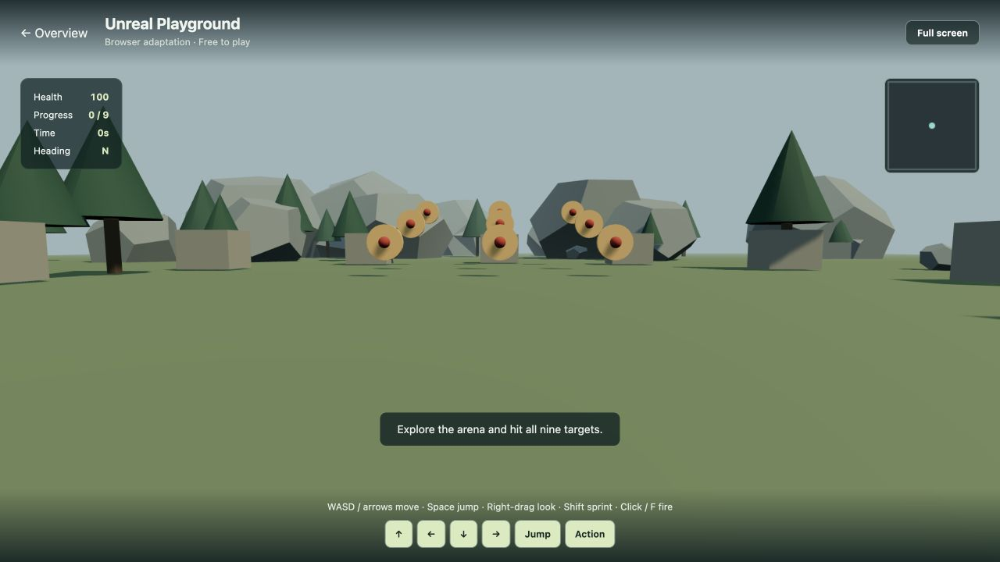

First-person aiming
The player chooses a direction or target and commits an attack. Visible hit feedback connects the input to its result, making accuracy and positioning part of the interaction.
Unreal Engine
An Unreal Engine scene project with game objects, level construction, and interactive systems.
The player chooses a direction or target and commits an attack. Visible hit feedback connects the input to its result, making accuracy and positioning part of the interaction.
Targets provide a readable goal for interaction. Their position establishes the aiming challenge, while their response shows whether the action succeeded.
This part of the project contributes to the core interaction described above. Its role is presented through the project’s available interface, source, and visual preview.
Explore the arena and hit all nine targets. Independent browser adaptation of the project concept, built with JavaScript and WebGL. This is not a packaged Unreal Engine build.
WASD / arrows move · Space jump · Right-drag look · Shift sprint · Click / F fire


Project reference preview; recovered build not verified.